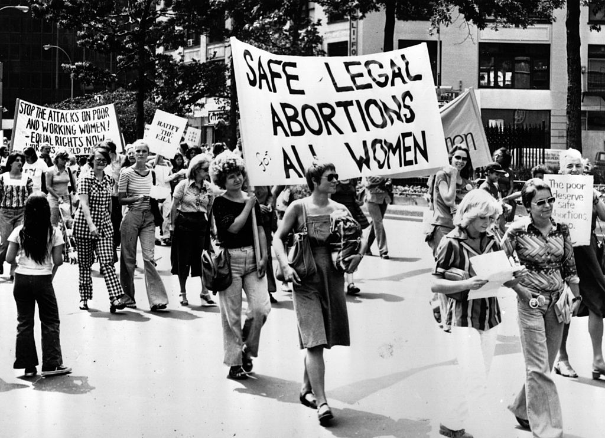

Abortion in America
Abortion in America
Before Roe V. Wade
Access to Abortions
In America, before the ruling of Roe V. Wade, the access and public opinion of abortion widely changed based on where in the US someone may be. Connotations changed based on race, social standing and economic fortune. Some women had access to doctors who would discreetly perform abortions, while poorer women would have to resort to home-brewed methods enacted by midwifes and friends.
Though the legality and rate of abortions are somewhat correlated, a ban on abortions is about as successful as a ban on alcohol. Prohibition did nothing to stop better-to-do individuals from drinking, just as bans on abortion rarely applied to richer women. For the poor and minorities, abortion laws could mean the different between life and death.
State's Rights
The legality of abortion also was wildly different. According to research done by the Washington Post, before the enactment of Roe V. Wade, 30 states had laws that explicitly banned abortion. The other 20 states had laws that allowed for abortions to be administered under certain guidelines. There were groups within all 50 states that made arguments from moral, religious, and manifest-destiny like positions, postulating that abortion would ‘degrade’ the moral fabric of society. The opposing groups stated that a women’s body being controlled was inherently unnatural, and that the decision to terminate a birth was an inherent fundamental right of any woman.
Depending on which state someone may live in the, one group came out on top, so the nation had 50 different laws applying to the same subject. District and county courts didn’t know how to rule on states deeming a woman’s right to her body as ‘unconstitutional’. This meshwork of different laws was a disaster waiting to happen. So in 1973, the Supreme Court stepped in.
